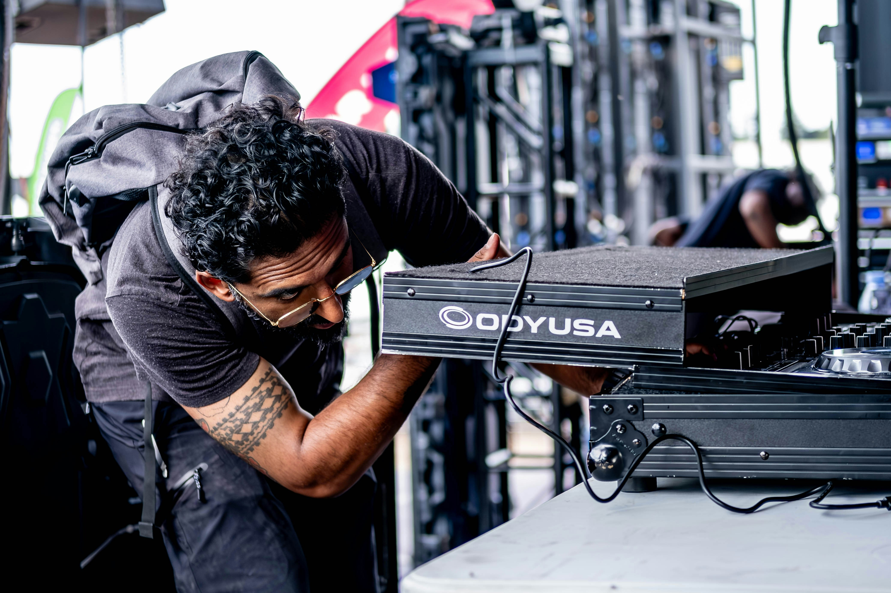
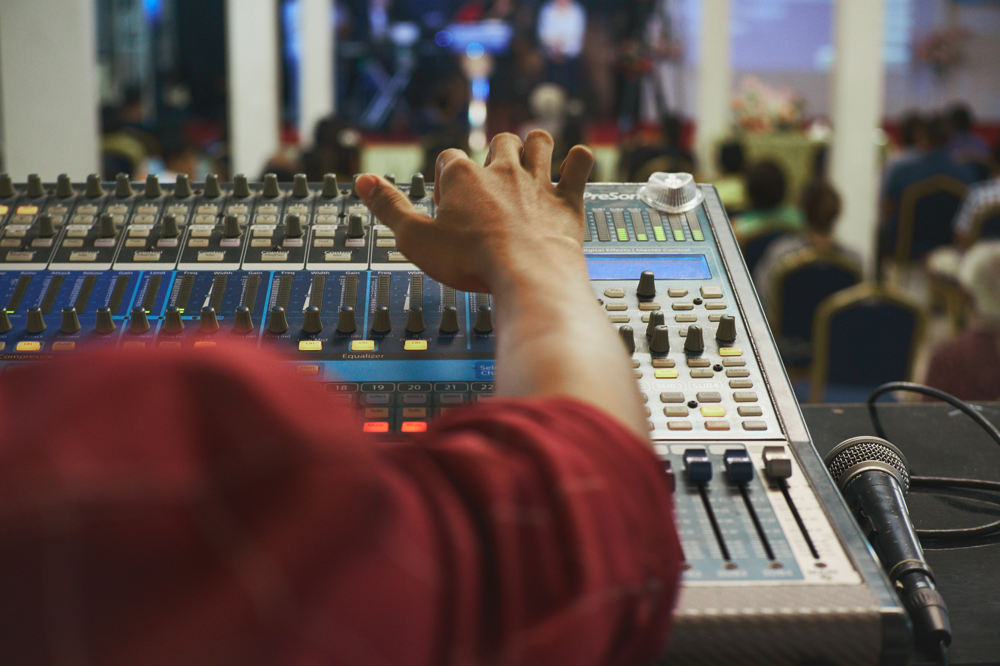

What We Cover
Ongoing Support, By Category
Support at Studio Thirteen is organized into three major categories. Each has its own dedicated hours below — reach out during those windows for the fastest response, or use the contact form for anything that can wait until the next business day.
-

Session Support
Day-of assistance for anything happening in the booth — engineer scheduling changes, session extensions, file transfers, and troubleshooting during an active recording, mixing, or podcast block.
Hours of Operation
- Mon–Fri: 9:00 AM – 11:00 PM
- Saturday: 10:00 AM – 8:00 PM
- Sunday: 11:00 AM – 6:00 PM
- Rush requests: By phone only, 24 hours a day
-

Equipment & Technical Support
Preventive maintenance and repair for consoles, outboard gear, microphones, and computers, plus loaner equipment for clients who need a backup mic or interface mid-project.
Hours of Operation
- Mon–Fri: 8:00 AM – 6:00 PM
- Saturday: 9:00 AM – 2:00 PM
- Sunday: Closed — emergencies routed to on-call tech
- Loaner pickup: By appointment, Tue & Thu afternoons
-

Event & Live Production Support
Load-in, sound check, and live-mixing support for off-site showcases, listening parties, and release events booked through the studio, along with post-event breakdown and equipment return.
Hours of Operation
- Load-in & sound check: 2 hours before any booked event start time
- Weeknight events: 6:00 PM – Midnight
- Weekend events: 12:00 PM – 2:00 AM
- Booking lead time: Minimum 10 business days